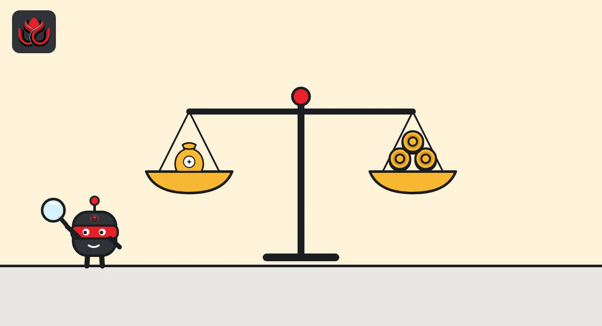

Rumor vs record: what viral posts got right and wrong about the U.S. move against MEXC
Posts about FinCEN's MEXC order spread fast on November 6 and 7, 2026. We checked each claim against FinCEN's own order. Most numbers hold up; two points do not.
Key points
- The headline numbers in the viral posts match FinCEN's order: about $16 billion in likely illicit flows, nearly $1.5 billion tied to Russian sanctions evasion and over $1 billion with Iranian exchanges.
- Calling it a U.S. "sanction" is wrong. It is a FinCEN order under the Combating Russian Money Laundering Act, not an OFAC sanctions listing, so MEXC accounts are not frozen worldwide.
- The ban covers U.S. financial institutions sending funds to or receiving funds from MEXC Global, and starts 30 days after the order runs in the Federal Register.
- A quote attributed to MEXC saying it operates normally and will work with FinCEN was not on MEXC's own website when we checked. We mark it unverified, not false.
Rumor vs record
| What is going around | Verdict | What the record shows |
|---|---|---|
| "The U.S. cut MEXC out of the financial system." | Partly true | FinCEN's order bars U.S. financial institutions from any transmittal of funds to or from MEXC Global. It does not shut MEXC down or freeze accounts outside the U.S. Source |
| "At least $16 billion in illegal transactions, 2021 to 2026." | True | FinCEN's release says at least $16 billion; the order itself says at least $16.7 billion in likely illicit activity since May 2021. Source |
| "About $1.5 billion in Russian sanctions evasion." | True | The order cites nearly $1.5 billion in direct and indirect exposure to Russian sanctions evasion. Source |
| "About $1 billion with Iranian crypto exchanges." | True | The order cites over $1 billion in direct transactions with more than 40 Iranian exchanges, inside about $1.87 billion of Iran exposure. Source |
| "Money from the IRGC-Qods Force." | True | The order cites about $22 million tied to the Central Bank of Iran and the IRGC-Qods Force. It is a small part of the total. Source |
| "The U.S. sanctioned MEXC." | Wrong | This is not an OFAC sanctions designation. It is a FinCEN order under section 9714(a). OFAC sanctions would freeze assets; this order cuts U.S. payment links. Source |
| "It takes effect 30 days after publication in the Federal Register." | True | The order's effective date is 30 days after its Federal Register publication. That date was not set yet when we checked. Source |
| "MEXC says it operates normally, user assets are safe, and it will work with FinCEN." | Unverified | We did not find this statement on MEXC's own website when we checked on November 6, 2026, at about 9:30 p.m. ET. We will update if MEXC posts it. |
Why we did this check
Within hours of FinCEN's announcement, posts in several languages summed up the order with dramatic headlines. Most got the numbers right. Some mixed up what kind of action it is, which matters a lot for anyone with funds on MEXC.
We went to the two primary documents: FinCEN's news release and the order itself. We did not use other news articles.
The point that matters most for users
An OFAC sanctions listing would block the exchange's property under U.S. jurisdiction and bar U.S. persons from dealing with it. FinCEN's order is narrower: it stops U.S. financial institutions from sending money to MEXC Global or receiving money from it. The order also says that MEXC affiliates located in the United States, if any, are outside its scope.
For users outside the U.S., the practical effect depends on how their bank, card or payment app connects to MEXC. The order does not, on its own, freeze anyone's MEXC balance.

What we will watch
The Federal Register date, which starts the 30-day clock; any official MEXC statement; and on-chain deposits and withdrawals at MEXC wallets. Our full story on the order is here.
LC Insight analysis
This section is our reading of the facts above, not a statement of fact.
- Viral posts were mostly accurate on numbers and mostly wrong on the legal label. "Sanction" sounds like frozen accounts; this order is about payment links. That difference is exactly what readers holding coins on MEXC need to know.
What's next
- Federal Register publication date
- An official MEXC statement
- MEXC wallet flows on block explorers
Disclaimer. This article is based on public information and the sources listed below as of the update time shown. It is for information only and is not investment, legal or tax advice. Figures may change as companies and authorities publish new data.